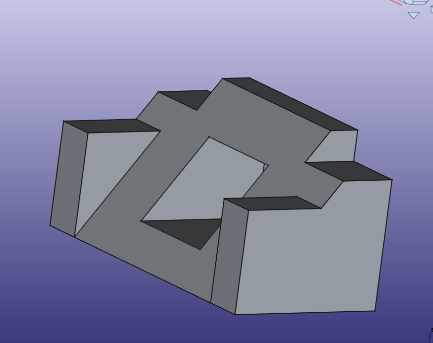
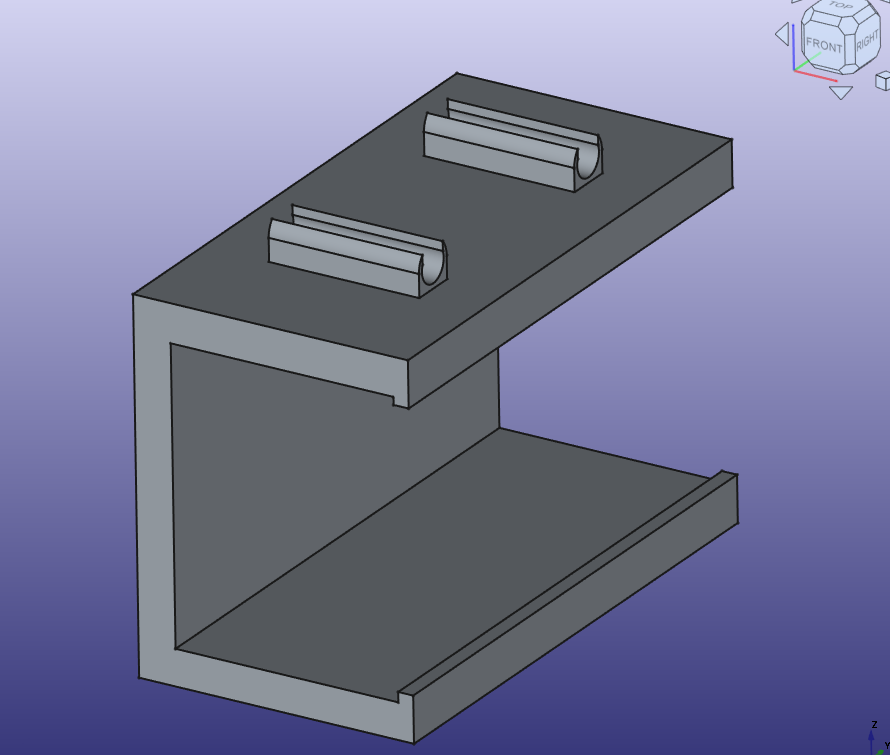
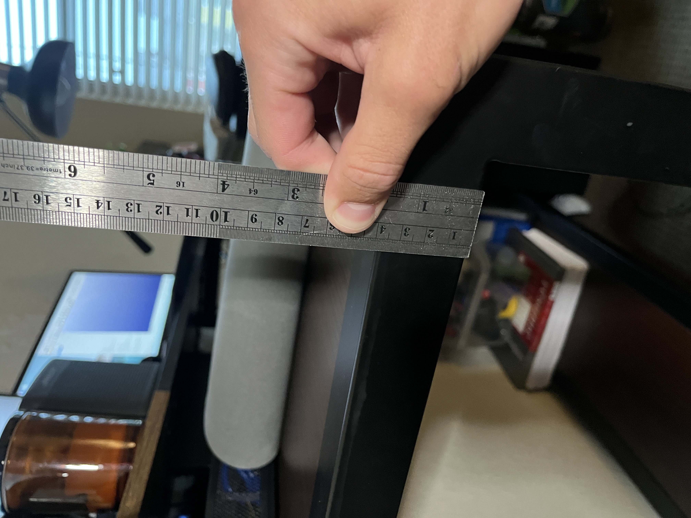
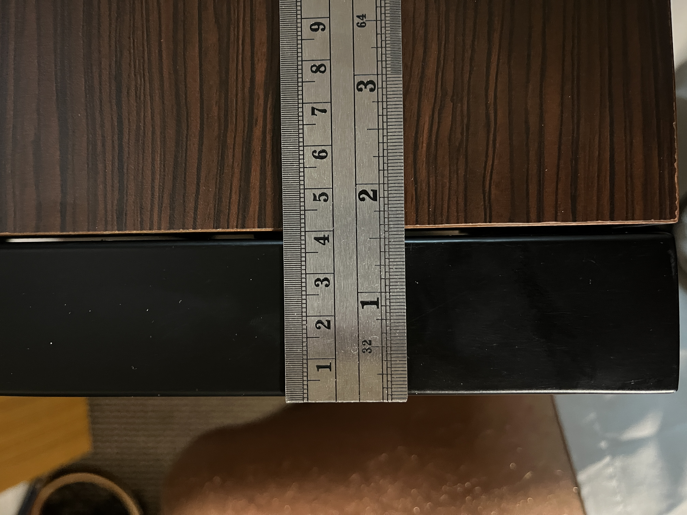

Object 1: Basic Design Tutorial 017
I missed class when Lucas went over this object and wow. I constantly found myself having a feeling of "oh yeah I got it now", stop reading the tutorial wiki, and then ultimately falling short. I got there in the end but leaned heavily into the manual.
Object 2: Desk Cord Holder
This design I am pretty proud of I was able to use my ruler to measure my desk. Since it is made of square stock I was able to set the contraints on my sketch to be equal lengths. This was pretty useful. I also used a 1mm latch that was 2mm in width. This will fit in the gap bettween the steel and the wood on my desk. This is not an issue on the underside of my desk, I could have made the lock much wider. I enjoyed iterating my sketch often going between measureing and FreeCAD too often, that is when I made my paper sketch.
  
Level 3: Save icon
My first time holding a floppy disk in real life. I made this model dimensionally accurate by using this image online to reference all my dimensions off. The holes in the bottom were also a key feature that I included.